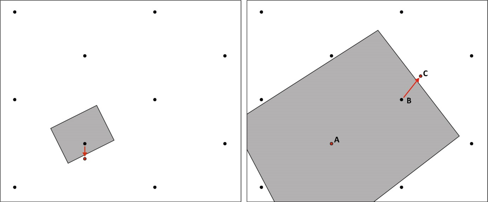

4.1 Inleiding
Sensu strictu wil archeologische prospectie in de eerste plaats maar één onderzoeksvraag beantwoorden: is er een archeologische site aanwezig of niet? De prospectietechnieken voor steentijd artefactensites richten zich dan ook op het vinden van artefacten en andere archeologische indicatoren (zie 4.2.2.2.1), doorgaans in een steekproef van de bodem (zie 4.2.2.2.3).
Bijkomend levert een prospectie vaak ook andere informatie op. Archeologisch booronderzoek toont bijvoorbeeld de bodemopbouw en -bewaring van elke boorlocatie, en in zekere mate de positie van de artefacten hierin. Soms kan je ook een eerste inzicht bekomen in de verticale vondstspreiding en/of de chronoculturele context, vooral als de prospectie veel artefacten oplevert.
Deze informatie vult het landschappelijk onderzoek aan. Door de hogere resolutie van de gebruikte grids biedt prospectie hierover ook een hogere resolutie aan data. Dit vormt niet alleen een goede controle op het landschappelijk onderzoek, maar helpt ook bij de interpretatie van de prospectie zelf. De bodemopbouw van een boorlocatie kan je bijvoorbeeld vertellen of een daar aangetroffen vondst deel kan uitmaken van een lokale site, ofwel verplaatst werd door bijvoorbeeld erosie en colluviatie.
Op dezelfde manier kan je er vaak bepaalde waarderingsvragen al (gedeeltelijk) mee beantwoorden, zoals de bewaringstoestand van de site. Minstens toont dit welke vragen al dan niet van belang zijn bij de waarderingsfase. Deze ‘bijkomende’ informatie uit de prospectie is daarom belangrijk voor het bepalen van de strategie van het waarderingsonderzoek. Indien bijvoorbeeld een artefact lijkt te wijzen op de aanwezigheid van een zeldzame periode, richt je het waarderingsonderzoek best op het inzamelen van extra vondsten ter bevestiging daarvan.
Voor het bepalen van de strategie van een prospectie naar steentijdsites hou je rekening met:
de archeologische verwachting;
de landschappelijke context, met inbegrip van geomorfologie/pedologie/stratigrafie;
de lokale bodembewaring.
Aan prospectie gaan dus steeds bureauonderzoek en landschappelijk bodemonderzoek vooraf. Deze vertellen je immers wat je zoekt, en waar (zowel horizontaal als verticaal) je dit best zoekt. Dit zal in grote mate bepalen hoe je hier best naar zoekt (methodiek en strategie). Dit geldt voor alle archeologie, maar bij uitstek voor steentijd omwille van de grotere variatie in geomorfologische/stratigrafische contexten.
4.2 Technieken
4.2.1 Veldkartering
Veldkartering is doorgaans de snelste en goedkoopste prospectiemethode voor steentijd artefactensites. In het kader van preventieve archeologie is het uitvoeren van veldkartering alleen echter onvoldoende. De methode kent namelijk enkele belangrijke beperkingen:
Veldkartering kan alleen sites opsporen die zich aan of kort bij de huidige oppervlakte bevinden. Dieper afgedekte steentijdsites worden dus niet gedetecteerd.
Veldkartering is niet op elk terrein inzetbaar, want de resultaten zijn sterk afhankelijk van:
de aard van de site (densiteit, grootte van artefacten, grondstof van de artefacten enz.);
de aard en historiek van grondbewerking (tijdstip en diepte van ploegen, rooien van knolgewassen enz.);
aanwezigheid van andere zaken aan het oppervlak (vegetatie, verhakselde gewassen, dagzomend grind, recent afval enz.);
de weersomstandigheden sinds de grondbewerking en dan vooral de hoeveelheid neerslag. Om veldkartering efficiënt te laten verlopen dient het terrein na het ploegen al enige tijd beregend te zijn om aanklevend sediment van de vondsten te spoelen;
de weersomstandigheden tijdens de veldkartering: bewolkt is doorgaans beter dan sterke zon;
de ervaring van de prospecteur en zijn vertrouwdheid met het gebied;
de mate waarin het terrein reeds werd gekarteerd.
Veldkartering kan daarom wel een indicatie geven over de aanwezigheid van steentijd artefactensites indien vondsten worden aangetroffen, maar kan onvoldoende uitsluitsel bieden over de afwezigheid van sites.
Veldkartering kan echter wel een meerwaarde betekenen als aanvullende methode. In de huidige praktijk wordt het zelden in een aparte onderzoeksfase ingezet, maar tijdens bijvoorbeeld landschappelijk of archeologisch booronderzoek kan ook de oppervlakte worden afgespeurd zonder veel extra moeite. Eventuele vondsten vormen dan een belangrijke bron van informatie over mogelijke sites. Het is daarom aan te raden om bij elke aanwezigheid op het terrein en bij omstandigheden die het toelaten de oppervlakte te inspecteren op de aanwezigheid van vondsten.
4.2.2 Archeologisch booronderzoek
4.2.2.1 Doel
Archeologisch booronderzoek heeft als doel archeologische sites op te sporen door middel van boringen. Bij steentijd artefactensites gebeurt dit steeds door het herkennen van archeologische indicatoren in opgeboord sediment. Het is soms mogelijk om antropogene lagen en sporen te herkennen in boringen, maar dit valt buiten het opzet van dit afwegingskader.
In tegenstelling tot in dit afwegingskader, wordt in de CGP een onderscheid gemaakt tussen verkennend en waarderend archeologisch booronderzoek:
Verkennend archeologisch booronderzoek: prospectie in een grid van 10 x 12 m of dichter (dus ook 5 x 6 m!)
Waarderend archeologisch booronderzoek: verdichting van een verkennend archeologisch booronderzoek tot een grid van 5 x 6 m of dichter.
Deze termen worden in de Vlaamse archeologie dan ook algemeen gebruikt. De term ‘waarderend archeologisch booronderzoek’ is echter verouderd en kan de foute indruk geven dat je ook andere waarderingsvragen zou kunnen beantwoorden met booronderzoek.
De monstergrootte van boringen is echter te klein om de aan- of afwezigheid van artefactconcentraties te bepalen, en je kan er dus ook geen concentraties mee afbakenen. Je kan positieve boringen dus niet waarderen door er extra boringen langs of rond te plaatsen (zie 5.2.1). Voor een waarderingsonderzoek zijn grotere monsters nodig, in de vorm van proefputten (zie 5.2.2).
Verdichten van een grid vormt louter een vervollediging van het verkennend booronderzoek, nadat dat omwille van kostenefficiëntie met een lage resolutie werd uitgevoerd (zie 4.2.2.4.2). De techniek is identiek, en ook de doelstelling. Waarderend booronderzoek met de methode zoals beschreven in de huidige Code van Goede Praktijk heeft net zoals het verkennend booronderzoek tot doel om zones aan te duiden waarin steentijdsites aanwezig zijn, die vervolgens verder gewaardeerd moeten worden met proefputtenonderzoek (zie 5.2.1).
Daarom gebruiken we in dit afwegingskader de term ‘waarderend archeologisch booronderzoek’ niet. Daarmee wordt ook ‘verkennend’ archeologisch booronderzoek betekenisloos, en spreken we alleen nog over ‘archeologisch booronderzoek’.
4.2.2.2 Basisprincipes
4.2.2.2.1 Archeologische indicatoren
De aanwezigheid van steentijd artefactensites kan in booronderzoeken worden herkend aan de hand van:
lithische artefacten;
handgevormd aardewerk;
(verbrand) bot;
(verkoolde) botanische macroresten (hazelnootdoppen, graankorrels enz.);
houtskool.
De aanwezigheid van lithische artefacten is de duidelijkste indicator voor de aanwezigheid van een steentijdsite. De volledige variatie aan grondstoffen en types artefacten komt hiervoor in aanmerking.
Veel steentijdsites bestaan voor het grootste deel uit klein debitageafval (chips, afslagfragmenten enz.). Bij booronderzoek worden daarom vooral (zeer) kleine artefacten aangetroffen. Grotere artefacten (kern, afslag, kling, werktuig enz.) worden slechts zelden opgeboord (fig. 4.1). Daarom is een fijne waarnemingstechniek (zeven over voldoende fijne maaswijdte) noodzakelijk voor het opsporen van steentijdsites (fig. 4.2; zie ook 4.2.2.4.9).
Fragmenten aardewerk in ‘prehistorische techniek’ (handgevormd) kunnen ook een aanwijzing zijn voor de aanwezigheid van een artefactensite. In Vlaanderen werd aardewerk in jager-verzamelaarscontext voor het eerst geproduceerd vanaf het finaalmesolithicum, en wordt meestal geassocieerd met de Swifterbantcultuur.
Meestal is handgevormd aardewerk in boorresidu’s echter sterk gefragmenteerd, waardoor het moeilijk tot niet toe te schrijven is aan een bepaalde periode. In zeldzame gevallen kunnen technische (bijv. specifieke verschraling van het baksel) of decoratieve elementen toch een aanwijzing geven.
Houtskool, verbrande macroresten van planten, of verbrand bot kunnen afkomstig zijn van activiteitskernen zoals haardplaatsen, zeker wanneer ze in associatie met elkaar of met (verbrande) vuursteen voorkomen. In dergelijke zones kan houtskool in relatief grote hoeveelheden aanwezig zijn in de boorresidu’s. Dit kan je reeds opmerken bij het boren zelf, door de uitgesmeerde zwarte strepen in het opgeboorde grondmonster, of bij het zeven.
Houtskool kan uiteraard ook worden gevormd in natuurlijke omstandigheden, zoals bij bosbranden. Daarom wordt de aanwezigheid van houtskool meestal alleen als indicatie voor de aanwezigheid van een site beschouwd als:
het voorkomt in associatie met andere indicatoren;
en/of als het geclusterd en in opvallend grote hoeveelheden voorkomt.
In dit geval ga je best over op een fijnere maaswijdte (bijv. 0,5 mm) om eventuele kleine verbrande macroresten zoals zaden of graankorrels niet te missen, en zeef je voorzichtig om eventuele herkenbare fragmenten intact te houden.
4.2.2.2.2 Steentijd artefactensites
De term ‘site’, zoals hier gebruikt, dekt een zeer brede lading. Steentijd artefactensites zijn het resultaat van een waaier aan verschillende activiteiten. Ze nemen daarom veel verschillende vormen aan, gaande van slechts één achtergelaten werktuig, weinig dense spreiding van artefacten zonder clustering, een concentratie van artefacten gevormd bij één of meerdere activiteiten, tot groepen artefactconcentraties. Op dezelfde plaats kan bovendien herhaaldelijk prehistorische activiteit hebben plaatsgevonden, die door accumulatie van vondsten en vondstconcentraties leidden tot zeer rijke, dense en vaak uitgestrekte sites (zgn. ‘palimpsest’ sites). Steentijd artefactensites kunnen dus zowel uit één als uit miljoenen artefacten bestaan. Ook in oppervlakte kunnen ze enorm variëren, van enkele vierkante meters tot tientallen hectaren.
De tafonomie van sites kan bovendien een belangrijke impact hebben op hun karakteristieken. Bioturbatie en landbouwactiviteiten kunnen bijvoorbeeld artefacten horizontaal verplaatsen en concentraties ‘uitsmeren’ (groter en minder dens maken), winderosie kan kleine artefacten verwijderen uit sites en er verderop nieuwe sites mee vormen, enz. De grote tijdsdiepte en evolutie van het landschap kunnen er bovendien voor zorgen dat artefacten op verschillende stratigrafische niveaus werden bewaard.
Archeologische boringen zijn weinig effectief bij een lage artefactdensiteit (zie 4.2.2.3). Daarom focussen we hieronder voornamelijk op sites met een zekere densiteit aan vondsten, die vaak een bepaalde clustering vertonen: één of meerdere artefactconcentraties.
Ook artefactconcentraties kunnen in veel verschillende vormen en maten voorkomen. Om de principes achter archeologisch booronderzoek te verduidelijken maken we hier enigszins abstractie van en beperken we ons tot een vereenvoudiging van de meest typische vorm.
Deze benadert vaak de vorm van een cirkel of een ovaal. De densiteit is doorgaans hoger in het centrum dan in de periferie. Binnen dit patroon, op micro-schaal, is de vondstspreiding zeer onregelmatig en complex. De periferie wordt geleidelijk aan minder dens, waardoor een concentratie meestal geen scherpe of duidelijk aflijnbare grenzen vertoont. Verder rond concentraties is er bovendien vaak een ‘ruis’ van zeer lage densiteit aan artefacten aanwezig (fig. 4.3).
4.2.2.2.3 Steekproef
Zoals voor de meeste prospectiemethoden geldt, onderzoek je met archeologisch booronderzoek niet de volledige oppervlakte van een studiegebied maar slechts een deel. Het is dus slechts een steekproef. Het betreft bovendien een zeer kleine steekproef, zelfs bij de meest intensieve booronderzoeken (fig. 4.4). Daarom biedt de methode alleen bij voldoende grote sites met een hoge vondstdensiteit een hoge graad van zekerheid. Dit betekent dat de kans om sites te missen heel reëel is bij de meeste archeologische booronderzoeken. Bovendien is er zeer veel variatie in prehistorische artefactensites en is hun vondstspreiding op micro-schaal steeds complex en onregelmatig (zie 4.2.2.2.2).
Om deze redenen is het bijna onmogelijk om precieze kansberekening met mathematische formules toe te passen op prospectie van concrete projectgebieden. In plaats daarvan werken we met bredere principes: opsporingskans, trefkans en vindkans.
4.2.2.2.4 Opsporingskans
De opsporingskans is de kans dat een artefactconcentratie daadwerkelijk opgespoord wordt. De opsporingskans bestaat uit de trefkans en de vindkans:
De trefkans is de kans dat een boring in een artefactconcentratie wordt gezet, m.a.w. dat minstens één van de boringen ‘raak’ is.
De vindkans is de kans dat er ook daadwerkelijk archeologische resten worden opgeboord en herkend in een ‘treffende’ boring.
Het onderscheid tussen trefkans en vindkans is van belang omdat ze bepaald worden door verschillende aspecten van de boormethodiek.
4.2.2.2.5 Trefkans
De trefkans wordt bepaald door het boorgrid. Hoe fijner het grid is, hoe groter de trefkans wordt (fig. 4.5).
Voor sites met meerdere artefactconcentraties speelt ook de absolute grootte van het onderzoeksgebied een rol. Hoe groter de onderzochte zone binnen een dergelijke site, hoe meer boringen erin worden geplaatst en hoe meer concentraties aanwezig kunnen zijn, en dus hoe groter de kans dat minstens één concentratie wordt getroffen (fig. 4.6).
Artefactconcentraties die aan de rand van of slechts gedeeltelijk in een studiegebied liggen kan je gemakkelijker missen omdat deze niet volledig door het boorgrid omvat worden. Dit is het zogenaamde grenseffect op de trefkans. Dit effect wordt sterker bij een langwerpiger en dus smaller onderzoeksgebied (fig. 4.7).
4.2.2.2.6 Vindkans
Zowel de boordiameter als de maaswijdte van de zeef bepalen de vindkans:
Hoe groter de boordiameter, hoe groter de vindkans. Een grotere boordiameter zorgt voor een groter sedimentmonster, dat een grotere kans heeft om artefacten te bevatten (fig. 4.4 en fig. 4.8).
Hoe fijner de maaswijdte van de zeef, hoe groter de vindkans. Een fijnere maaswijdte weerhoudt een groter deel van de vondsten die in een monster aanwezig kunnen zijn, namelijk ook de kleinere fracties (fig. 4.2).
De boordiameter en de maaswijdte van de zeef moeten onderling in balans zijn voor een adequate vindkans. Alleen onafhankelijk van elkaar aan de normen van de CGP voldoen volstaat niet. Als bijvoorbeeld alleen een relatief kleine boordiameter haalbaar is omwille van een grote boordiepte, combineer je dit best met een voldoende kleine maaswijdte van de zeef (zie 4.2.2.4.10).
4.2.2.3 Toepassing
Archeologisch booronderzoek is enkel effectief op sites met een voldoende grote densiteit aan artefacten. Sites met een lage vondstdensiteit en/of nagenoeg egale vondstspreiding kunnen niet met voldoende zekerheid worden opgespoord met de gangbare boorgrids en boordiameters (zie 4.2.2.2), maar vereisen doorgaans een veel grotere steekproef.
Een archeologisch booronderzoek wordt in de huidige praktijk daarom enkel toegepast wanneer er een bepaalde verwachting is van aanwezigheid en bewaring van een steentijd artefactensite (met clustering en/of relatief grote vondstdensiteit). We moeten ons er echter bewust van zijn dat het gebruik van verwachtingsmodellen een groot risico op cirkelredeneringen veroorzaakt (zie 2.3.2).
4.2.2.4 Methode
4.2.2.4.1 Patroon boorgrid
In de huidige praktijk wordt bijna uitsluitend een gelijkzijdig driehoeksgrid gebruikt. Bij deze gridvorm kunnen tussen de boorpunten driehoeken worden getekend, waarvan alle zijden even lang zijn. Alle boorpunten bevinden zich dus op gelijke afstand van elkaar.
In de praktijk worden vaak afgeronde afstanden gebruikt voor het uitzetten van een gelijkzijdig driehoeksgrid. Dit houdt het tel- en meetwerk eenvoudig. De afstand tussen de boorraaien is een veelvoud van 5 m en de afstand tussen de boringen een veelvoud van 6 m. In feite creëert dit gelijkbenige driehoeken (bijvoorbeeld 6 x 5,83 x 5,83 m bij een 5 bij 6 m grid), maar dit benadert de gelijkzijdigheid voldoende (fig. 4.9).
Met GPS of Total Station kan je ook eenvoudig perfecte gelijkzijdige driehoeken op het terrein uitzetten. Op die manier wordt soms in een grid met gelijkzijdige driehoeken van 5 x 5 x 5 m gewerkt (fig. 4.10).
Een gelijkzijdig driehoeksgrid is het efficiëntste patroon om cirkelvormige artefactenclusters te treffen. Met bijvoorbeeld een grid van 5 bij 6 m (340 boringen per ha) tref je elke cirkelvormige concentratie groter dan 6,5 m diameter in principe minstens één keer. Voor een gelijkaardige trefkans zou je in een vierkantsgrid om de 5 m boringen moeten plaatsen, wat resulteert in 400 boorpunten per ha (fig. 4.11). De CGP laat een afwijking van een regelmatig driehoeksgrid daarom enkel toe mits motivatie.
Een regelmatig grid is het uitgangspunt. Je kan echter er van afwijken als de uitvoering van een boring:
onmogelijk is, bijvoorbeeld door de aanwezigheid van een obstakel op of in de bodem;
zinloos is, bijvoorbeeld wanneer ernstige lokale bodemverstoring vooraf duidelijk kan worden vastgesteld.
In deze gevallen verplaats je de boring tot naast het obstakel of de verstoring. Schrappen van een boring kan enkel indien het obstakel of de ernstige verstoring de volledige oppervlakte tussen de aanpalende boringen bestrijkt. Schrappen van een boring verlaagt de opsporingskans namelijk veel sterker dan verplaatsen (fig. 4.12). Je registreert een verplaatste boring uiteraard volgens de nieuwe coördinaten.

4.2.2.4.2 Resolutie boorgrid
Bij archeologisch booronderzoek werk je steeds in een grid van 10 bij 12 m of dichter (5 bij 6 m). Simulaties op opgegraven vindplaatsen toonden immers aan dat lagere resoluties dan 10 bij 12 m onvoldoende trefkans bieden3.
Een boorgrid van 10 bij 12 m treft een cirkelvormige concentratie met een diameter groter dan 12,4 m minstens één keer (fig. 4.13). Individuele vondstconcentraties zijn echter vaak (veel) kleiner. De trefkans is bij een 10 bij 12 m grid dan ook relatief laag en laat niet toe om individuele concentraties met enige zekerheid te treffen. Booronderzoek met deze resolutie kan dus de aanwezigheid van sites aantonen, maar is niet in staat om de spreiding van artefactenclusters erbinnen in kaart te brengen. Dit grid laat daarom enkel interpretatie toe van het hele onderzoeksgebied of minstens grote zones erin (fig. 4.14).
Een boorgrid van 5 bij 6 m treft een cirkelvormige concentratie met een diameter groter dan 6,5 m minstens één keer (fig. 4.13). Dit benadert de grootteorde van gekende steentijd vondstconcentraties beter, maar is nog steeds groter dan heel wat concentraties. De trefkans van deze resolutie is daarom veel groter dan bij een 10 bij 12 m grid, maar individuele concentraties kunnen nog steeds gemist worden. Dit grid laat dus een algemene interpretatie toe over de aanwezigheid en spreiding van artefactenclusters, maar met een zekere foutmarge (fig. 4.15).
Een boorgrid van 2,5 bij 3 m treft een cirkelvormige concentratie met een diameter groter dan 3,3 m minstens één keer (fig. 4.13). Deze resolutie biedt daarmee een relatief grote trefkans voor individuele vondstconcentraties (fig. 4.16).
Kortom, een hogere resolutie van het boorgrid resulteert steeds in een beduidend hogere trefkans. Een verdubbeling van de resolutie van het boorgrid veroorzaakt echter ongeveer een verviervoudiging van het aantal boringen (fig. 4.17).

In de huidige praktijk wordt een 5 bij 6 m grid voor het opsporen van individuele artefactconcentraties beschouwd als het efficiëntst om een eerste beeld te vormen van de aanwezigheid en spreiding van steentijd artefactensites in een onderzoeksgebied. Daarom is een grid van 5 bij 6 m4 steeds het uitgangspunt bij archeologisch booronderzoek. We moeten ons er echter bewust van zijn dat dit grid niet toelaat om met zekerheid elke artefactconcentratie te treffen (zie boven)5.
Bij grotere onderzoeksterreinen kan je echter met een 10 bij 12 m grid reeds een algemeen beeld bekomen. In grotere onderzoeksterreinen plaats je een groter aantal boringen, met een grotere absolute steekproef tot gevolg. Tegelijk is de kans groter dat het onderzoeksgebied meerdere artefactconcentraties bevat, wat de kans vergroot dat er minstens één wordt getroffen. Om de kost van het groter aantal boringen te beperken, worden terreinen groter dan ongeveer 2500 m² in de huidige praktijk daarom meestal eerst geprospecteerd in een grid van 10 bij 12 m.
Indien hierbij geen boringen duidelijk positief zijn6, kan je het booronderzoek als negatief beschouwen en het steentijd-gericht vooronderzoek dus afsluiten. Dit betekent echter niet dat er geen steentijdsites meer aanwezig kunnen zijn. Booronderzoek is sowieso weinig effectief bij sites met een lage vondstdensiteit, en het grid van 10 bij 12 m mist gemakkelijk individuele vondstconcentraties. Bij eventueel verder onderzoek (bijvoorbeeld proefsleuven of opgraving van recentere archeologie) hou je er daarom steeds rekening mee dat lage densiteit sites en/of geïsoleerde artefactconcentraties bij het booronderzoek gemist kunnen zijn (zie 6.3).
Indien hierbij één of meer boringen duidelijk positief zijn7, moet je dit verder verdichten tot 5 bij 6 m (fig. 4.18). Een positief resultaat in een 10 bij 12 m grid toont immers louter de aanwezigheid van een site binnen het onderzoeksgebied, maar individuele vondstconcentraties kunnen gemakkelijk gemist worden. Bij gebruik van een 10 bij 12 m grid is dit zelfs het uitgangspunt (zie boven). Voor het detecteren van mogelijk opgravingswaardige zones is het nodig om de individuele vondstconcentraties te karteren binnen een onderzoeksgebied, wat dus minstens een 5 bij 6 m grid vereist.
Wanneer je het grid verdicht tot 5 bij 6 m doe je dat steeds over een ruime zone.
Meestal wordt best het volledige onderzoeksgebied onderzocht (fig. 4.19). Je kan het alleen beperken tot een deelzone als er duidelijke aanwijzingen zijn vanuit het onderzoek in het 10 bij 12 m grid dat goed bewaarde sites zich hoogstwaarschijnlijk alleen in die deelzone bevinden:
de bodem is alleen in de deelzone voldoende goed bewaard;
de positieve boringen komen geclusterd voor, alleen in de deelzone. Bij voorkeur is deze clustering gerelateerd aan een duidelijk af te bakenen geomorfologisch geheel (kronkelwaardrug, duin, …).
Opgelet: de afwezigheid van positieve boringen in delen van het onderzoeksgebied betekent niet dat hier helemaal geen artefactconcentraties aanwezig kunnen zijn. In een 10 x 12 m grid worden deze immers vaak gemist (zie boven).
Daarom onderzoek je standaard best het hele onderzoeksgebied, en beperk je je alleen tot deelzones als de resultaten van het 10 bij 12 grid hiertoe heel duidelijk aanleiding geven.
Je bakent eventuele deelzones bovendien steeds heel ruim af. Je beperkt je dan ook alleen tot deelzones als het onderzoeksgebied daarvoor voldoende groot is (fig. 4.20).
Bovendien houd je er rekening mee dat er buiten de deelzone(s) toch steentijdsites aanwezig kunnen zijn. Indien deze tijdens eventueel onderzoek naar sporenarcheologie (proefsleuven, opgraving) worden aangetroffen, moet er ruimte zijn in de planning om ze te waarderen en eventueel op te graven (zie 6.3).
Terreinen kleiner dan ongeveer 2500 m² prospecteer je best meteen in een 5 bij 6 m grid. Bij kleinere terreinen wordt immers zowel het aantal vondstconcentraties dat aanwezig kan zijn als het totaal aantal boringen van een 10 bij 12 m grid te klein voor een voldoende trefkans.
Ook bij een specifieke verwachting naar kleine sites (geïsoleerde artefactconcentraties) en/of minder dense sites kan je best meteen een 5 bij 6m grid inzetten. In uitzonderlijke gevallen kan het zelfs nuttig zijn om dit bij positieve resultaten verder te verdichten tot 2,5 bij 3 m. Indien de densiteit te laag is, kan je echter alleen met een grotere monstername (proefputten) effectief prospecteren (zie 4.2.3).
Het is ten slotte van belang om rekening te houden met het grenseffect op de trefkans (zie 4.2.2.2.5). Hiertoe plaats je best de eerste boorraai op 1/3 van de raaiafstand van de grens van het onderzoeksgebied, bijvoorbeeld op 3,3 m bij een 10 bij 12 m grid.
Bij smalle onderzoeksgebieden heeft het grenseffect een belangrijke impact. Het boren van slechts één raai in een 10 bij 12 m grid biedt er daarom onvoldoende trefkans (fig. 4.21: A). Dit kan je alleen compenseren door het aantal boorraaien te verhogen door:
ofwel het boorgrid te verdichten (fig. 4.21: B);
ofwel het onderzoeksgebied te verbreden, door het langs één of beide zijden uit te breiden fig. 4.21: C). In een preventieve context is onderzoek buiten het bedreigde terrein echter vaak niet mogelijk.
Indien het onderzoeksterrein te smal is voor meer dan één boorraai, ook in een 5 bij 6m grid, is de trefkans te klein voor een efficiënt archeologisch booronderzoek. Alleen bij een zeer hoge archeologische verwachting (bijv. reeds sites gekend op of langs het onderzoeksterrein) is het zinvol om dergelijke terreinen te prospecteren, maar dan pas je de techniek best aan door in een hogere resolutie te boren of meteen tot proefputtenonderzoek over te gaan.

4.2.2.4.3 Boortype
In de huidige praktijk wordt meestal handmatig geboord met Edelmanboren (fig. 4.22). Deze zijn meestal het meest kostenefficiënt en voldoen aan de vereisten van de CGP. Je kan er vaak echter moeilijk mee onder de watertafel werken, en het uitvoeren van een groot aantal en/of diepe boringen is ergonomisch belastend. Om dit laatste enigszins te remediëren werden ergonomische boorsets ontwikkeld.
Mechanische boortechnieken met buitenbuis en monstername in liners laten toe om probleemloos diep onder de watertafel te boren. Ze kunnen nagenoeg ongestoorde boorkernen in plastic liners leveren, die indien gewenst onder laboratoriumcondities onderzocht en bemonsterd kunnen worden. Ze zijn dan ook veel beter geschikt bij een complexe en/of ongekende stratigrafie.
Deze technieken zijn doorgaans duurder dan handmatig boren. Hun diameter is bovendien vaak beperkt. Ze worden in de huidige praktijk daarom vooral aangewend wanneer handmatig boringen niet inzetbaar zijn of de onderzoeksvragen niet kunnen beantwoorden.
Avegaarboringen zijn goedkoper dan andere mechanische technieken en beschikbaar in verschillende diameters tot 20cm8. Ze hebben niet de toepassingsvoordelen van verbuisde boortechnieken en sluiten qua inzetbaarheid en verstoring van de monsters eerder aan bij Edelmanboringen (zie 3.2.1). Ze zijn ergonomisch echter minder belastend dan handmatige technieken en kunnen vaak sneller geplaatst worden, zeker bij relatief diepe boringen. Daarom kunnen ze een interessant alternatief vormen voor Edelmanboringen, vooral bij grotere projecten waar de logistieke kost minder van belang is.
4.2.2.4.4 Boordiepte
Op basis van het bureauonderzoek en landschappelijk bodemonderzoek schat je in op welk niveau artefacten bewaard kunnen zijn. Doorgaans gaat het om een welbepaalde aardkundige eenheid of een deel ervan. Dit kan zowel regionaal als lokaal sterk variëren, afhankelijk van de geomorfologische en pedologische context. Niet alleen bodems of bodemhorizonten, maar ook afzettingslagen zonder enige zichtbare bodemvorming kunnen relevante aardkundige eenheden zijn.
Je boort steeds tot volledig doorheen dit niveau. Als er meerdere niveaus zijn die artefacten kunnen bevatten, boor je uiteraard tot volledig doorheen het onderste (fig. 4.23).
Je voorziet best enige marge door enkele decimeters dieper door te boren. Het bureauonderzoek en landschappelijk onderzoek bieden immers enkel een inschatting over de associatie tussen artefacten en aardkundige eenheden. Deze marge laat toe om die inschatting indien nodig te corrigeren tijdens het verder vooronderzoek.
4.2.2.4.5 Monstername
Je zamelt het sediment van alle aardkundige eenheden in die mogelijk archeologische indicatoren kunnen bevatten. Dit doe je gescheiden per relevante aardkundige eenheid, in de mate dat de boortechniek dit toelaat. Opgelet: niet elke aardkundige eenheid is ‘relevant’. Afzonderlijke bodemhorizonten hoeven bijvoorbeeld niet relevant te zijn indien de bodem pas na de steentijd werd gevormd.
In de praktijk bemonster je meestal best de volledige boring. Enkel bij grote diepteverschillen kunnen steriele niveaus eventueel onbemonsterd blijven. Ook hierbij neem je altijd best enige marge. Onder invloed van postdepositionele processen bevinden artefacten zich immers vaak ook in aangrenzende aardkundige eenheden (fig. 4.24).
Aardkundige eenheden kan je verticaal eventueel verder opsplitsen. Dit is meestal niet noodzakelijk, maar kan relevant zijn bij relatief dikke eenheden om extra informatie te bekomen over de stratigrafische positie van de site en de verticale spreiding van de vondsten. Opsplitsen kan:
per bodemhorizont (binnen een natuurlijke bodem);
per arbitrair niveau. Bij booronderzoek wordt vaak ‘per boorkop’ ingezameld.
Indien een deel van de verwachte site in een ploeglaag kan opgenomen zijn, maakt deze ploeglaag volgens de CGP deel uit van de vraagstelling en moet je deze ook (gescheiden) bemonsteren. Dit verhoogt minstens de vindkans van de site. Het potentieel voor kenniswinst van de in de bouwvoor aanwezige archeologie wordt met waarderingsonderzoek verder geëvalueerd (fig. 4.25; zie 5.2.2.2.5).
4.2.2.4.6 Diameter boor
De CGP bepaalt een minimale boordiameter van 10 cm. In principe kies je best steeds voor een zo groot mogelijke diameter, omdat deze een gevoelige invloed op de vindkans heeft. De diameter van de boor is de enige factor die het volume van de boormonsters bepaalt, want archeologische niveaus moeten steeds over de volledige diepte bemonsterd worden. Het verschil hiertussen is aanzienlijk: een 15 cm boring resulteert bijvoorbeeld in een meer dan dubbel zo groot monster dan een 10 cm boring (fig. 4.26).
In de praktijk kan het gebruik van grote diameters echter moeilijk tot onmogelijk gemaakt worden door:
zware sedimenten zoals leem en klei;
grote boordieptes bij afgedekte contexten.
Je kiest daarom best voor de grootste boordiameter die de praktische omstandigheden toelaten. Voor een goede vindkans bij relatief ondiepe boringen (< 120 cm) in zandbodems wordt een diameter van 15 cm aanbevolen. Een diameter van 20 cm werd hiervoor in het verleden vaak gebruikt, maar omwille van ergonomische redenen wordt dit in de huidige praktijk meestal vermeden.
Bij leem of klei, en/of grotere boordieptes, is het vaak moeilijk om een grotere diameter dan 12 of 10 cm te hanteren. De keuze tussen beide is afhankelijk van de precieze textuur en/of boordiepte. Voor een aanvaardbare vindkans combineer je kleinere boordiameters steeds met een voldoende fijne maaswijdte van de zeef (bijv. 1 mm). Als dit praktisch niet haalbaar is, kan je de opsporingskans ook verhogen door op elke boorlocatie twee boringen naast elkaar te plaatsen, of door een dichter boorgrid te hanteren.
4.2.2.4.7 Profielregistratie
Van alle boringen onderzoek je in het veld de sedimentaire en pedologische opbouw. Dit heeft tot doel het landschappelijk onderzoek te verfijnen door:
de stratigrafische opbouw en bodembewaring van het studiegebied in kaart te brengen;
een (paleo)topografische reconstructie van de relevante aardkundige eenheid/eenheden mogelijk te maken.
Daartoe beschrijf je van alle relevante aardkundige eenheden minstens:
de aard;
de bewaringtoestand;
de diepte;
de eventuele aanwezigheid van vondsten.
De aard en bewaringstoestand koppel je aan voorafgaande representatieve landschappelijke boringen, of je beschrijft en fotografeert een representatieve selectie van de boringen volgens de vereisten van de CGP. Dit moet toelaten om de volledige variatie in aardkundige opbouw van het onderzoeksgebied te documenteren en beschrijven.
Ook voor een relatief beperkte profielregistratie van archeologische boringen is een ruime ervaring met de geomorfologie en bodems van de regio vereist.
4.2.2.4.8 Zeeftechniek
Je zeeft steeds de boormonsters.
Als ook bij een grotere maaswijdte het zeven niet mogelijk blijkt laat de CGP ruimte om het sediment te snijden ‘op een manier die toelaat om vondsten van kleine omvang visueel waar te nemen’. Snijden en ook verbrokkelen zijn echter onvoldoende betrouwbare waarnemingstechnieken voor de kleine steekproef die booronderzoek vertegenwoordigt, en moeten dus vermeden worden.
Correct zeven, behandelen en uitzoeken van de monsters is essentieel om ervoor te zorgen dat aanwezige artefacten wel degelijk worden waargenomen.
Je zeeft in principe steeds nat. Droog zeven kan in sommige gevallen op voldoende efficiënte wijze uitgevoerd worden, bijvoorbeeld bij droog zand en een relatief grote maaswijdte (2 mm of meer), maar het resulteert in ‘vuilere’ zeefresidu’s waarin archeologische indicatoren moeilijker herkenbaar zijn. Het is bovendien meestal nodig om te wrijven bij droog zeven, wat ecofacten en handgevormd aardewerk kan vernielen voor ze herkend worden.
Je droogt de zeefresidu’s en controleert ze daarna op de aanwezigheid van archeologische indicatoren. In natte zeefmonsters kleven recente organische resten, sediment en archeologische indicatoren immers aan elkaar, wat de herkenning van vondsten bemoeilijkt.
Het op grootte sorteren van gedroogde residu’s (dus opnieuw zeven) kan helpen bij de herkenning van archeologische indicatoren. Dit kan vooral nuttig zijn bij residu’s rijk aan organisch materiaal en/of grind.
Het uitzoeken van de zeefresidu’s dient steeds te gebeuren door iemand met een ruime ervaring met lithische artefacten. Denk eraan dat de meeste artefacten vaak zeer klein zijn, bijvoorbeeld tot slechts 2 mm bij zeven op een maaswijdte van 2 mm. In de prospectiefase is deze kleine fractie even waardevol als grotere vondsten.
4.2.2.4.9 Maaswijdte zeef
De maaswijdte van de zeef heeft een belangrijke impact op de vindkans. De verdeling van lithische artefacten binnen een ensemble naar hun grootte volgt doorgaans een exponentiële curve, waarbij het leeuwendeel van de aanwezige artefacten zeer klein is (fig. 4.2). Bij de verwerking van steen tot werktuigen wordt immers een grote hoeveelheid ‘afval’ geproduceerd (debitageafval), waaronder een grote hoeveelheid kleine steenschilfers (chips). De maaswijdte van de zeef bepaalt hoeveel van de in een monster aanwezige vondsten werkelijk waargenomen kan worden: enkel de grotere stukken, of ook de kleinere fragmenten (zie 4.2.2.2.6).
De CGP schrijft een maximale maaswijdte van 2 mm voor. Dit is immers de maximale maaswijdte voor een aanvaarbare vindkans bij boordiameters kleiner dan 20 cm. Bij het gebruik van boordiameters van 12 of 10 cm is het echter aan te bevelen om fijner te zeven, met name op een maaswijdte van 1 mm (zie 4.2.2.2.4). Maar ook bij boordiameters van 15 of 20 cm biedt een fijnere maaswijdte steeds een meerwaarde, namelijk een hogere vindkans.
De CGP laat mits motivatie ruimte voor grotere maaswijdtes (maximum 6 mm) bij sedimenten die zich vanwege hun textuur niet lenen tot zeven op een maaswijdte van 2 mm. Dit heeft enkel betrekking op heel grindrijke contexten, waarin het onderscheid tussen kleine archeologische chips en natuurlijke schilfers vaak minder duidelijk is. De vindkans maximaliseer je in deze eerder uitzonderlijke omstandigheden best door het nemen van een groter monster (grote boordiameter).
Voor het zeven van leem en klei bestaan technische oplossingen, bijvoorbeeld het sediment in water laten weken voor het te zeven.
De aanwezigheid van grote hoeveelheden organisch materiaal zoals wortels kan zeven bemoeilijken, maar dit kan je opvangen door flotatie. Het is daarom geen afdoende argument om een grotere maaswijdte dan 2 mm te gebruiken. Bij flotatie controleer je het organisch materiaal steeds op de aanwezigheid van ecofacten.
4.2.2.4.10 Balans
Bij elk onderzoek moet je het boorgrid, de boordiameter en de maaswijdte van de zeef afstemmen op:
de archeologische verwachting (densiteit aan vondsten, densiteit aan vondstconcentraties, grootte van vondstconcentraties enz.);
de mogelijkheden en beperkingen van de methode (dichter boorgrid in een klein onderzoeksgebied, aangepast grid bij lijntracés enz.);
de praktische haalbaarheid (kleinere boordiameter bij diepe boringen of zware sedimenten, grovere maaswijdte bij grindrijke sedimenten enz.);
hun onderlinge balans (bijv. fijner zeven bij een kleine boordiameter).
4.2.2.5 Presentatie resultaten
De presentatie van de onderzoeksgegevens moet de interpretatie van de resultaten zo eenvoudig mogelijk maken en deze vervolgens illustreren. Daartoe visualiseer je de volgende aspecten samen:
de locatie van de (positieve) boringen;
aantallen en aard van de archeologische indicatoren in de positieve boringen;
de huidige topografie;
de aardkundige opbouw;
de topografie van eventuele afgedekte aardkundige eenheden;
de bodembewaring.
De rapportage bevat daarom minstens:
de beschrijving en interpretatie van alle referentieprofielen naar sedimentaire en pedologische eenheden;
een overzichtsplan dat de variatie in aardkundige opbouw en/of bodembewaring van het onderzoeksgebied toont, samen met een weergave van de topografie van het maaiveld en een aanduiding van de (positieve) boorlocaties;
terreindoorsneden die de variatie in aardkundige opbouw en/of bodembewaring van het onderzoeksgebied tonen;
overzichtsplannen van elke aardkundige eenheid die archeologische indicatoren bevat. Deze tonen:
een digitaal terreinmodel van de top van de aardkundige eenheid;
de locatie van alle uitgevoerde boringen;
de positieve boorlocaties voor de betreffende aardkundige eenheid, opgesplitst per relevante vondstcategorie, met aanduiding van vondstaantallen;
een beschrijving van de vondsten, bij voorkeur ondersteund door foto’s en/of tekeningen.
4.2.2.6 Interpretatie van de resultaten
4.2.2.6.1 Interpretatie van een boring
Een archeologische boring is al positief als één duidelijk artefact wordt aangetroffen, ongeacht de grootte van dit artefact.
Booronderzoek levert doorgaans zeer weinig artefacten op door de beperkte steekproefgrootte en de aard van steentijd artefactensites (zie 4.2.2.2.2). Bij de meerderheid van de positieve boringen gaat het om slechts één artefact. Meer dan een vijftal vondsten in één boring is eerder uitzonderlijk.
Lithische artefacten vormen de meest voorkomende indicator voor de aanwezigheid van een steentijdsite. De meerderheid van de lithische artefacten zijn kleine (vuur)steen-‘schilfers’ (chips) waarop debitagekenmerken zichtbaar zijn. Deze vormen vaak 80 - 90 % van een ensemble9. Eerder zelden worden grotere lithische artefacten opgeboord (afslag, kling, werktuig enz.).
Het is van groot belang dat de determinatie en evaluatie van de vondsten worden uitgevoerd door iemand met een ruime ervaring met de studie van lithische artefacten. Natuurlijk voorkomende vuursteen (kleine kiezelfragmenten in dekzanden, terrasgrinden enz.) kan soms sterk lijken op artefacten (pseudoartefacten). Het onderscheid met menselijke artefacten is daarom niet steeds zonder twijfel. Enkel een specialist kan dit onderscheid meestal met voldoende zekerheid maken op basis van de debitagekenmerken, grondstof en bewaringstoestand.
Ook andere materiaalcategorieën kunnen een positieve boring aanduiden, bijvoorbeeld (handgevormd) aardewerk. Maar de beoordeling of dit al dan niet geassocieerd is met de aanwezigheid van een steentijdsite is niet altijd evident. Vaak gaat het immers om kleine fragmenten niet-diagnostisch aardewerk die mogelijk ook aan andere periodes kunnen toegewezen worden. In een beperkt aantal gevallen kan wel een associatie worden gemaakt met een steentijdoccupatie, bijvoorbeeld bij aanwezigheid van bepaalde versierings- of verschralingselementen. Ook deze evaluatie moet uiteraard altijd gemaakt worden door iemand met voldoende relevante ervaring.
Andere indicatoren die op de aanwezigheid van een steentijdsite kunnen wijzen zijn:
(verkoolde) botanische macroresten (hazelnootdoppen, graankorrels enz.);
(verbrand) bot;
houtskool.
Ook hier geldt enige voorzichtigheid omdat deze indicatoren, houtskool voorop, ook onder natuurlijke omstandigheden kunnen worden gevormd (bijv. bosbranden) of geassocieerd kunnen zijn met recentere activiteiten. Deze indicatoren worden daarom meestal niet op zich beschouwd als een betrouwbare indicator voor de aanwezigheid van een steentijdsite, maar als een secundaire indicator als ook artefacten aanwezig zijn. Afgedekte prehistorische landschappen kunnen hierop deels een uitzondering vormen, omdat de aanwezigheid van recentere archeologie in het afgedekte niveau er kan worden uitgesloten. Ook voor de interpretatie van deze indicatoren is altijd de input van experten in de betreffende materiaalcategorie(ën) vereist.
Archeologisch booronderzoek kan geen uitsluitsel geven over de aan- of afwezigheid van een vondstconcentratie op de locatie van een positieve boring.
Door de beperkte monstergrootte kan booronderzoek meestal onvoldoende inzicht bieden in de lokale vondstdensiteit. Ook een lage artefactdensiteit, al dan niet als ‘ruis’ tussen concentraties, kan namelijk positieve boringen opleveren. Je kan met booronderzoek dan ook geen artefactconcentraties afbakenen.
Deze vragen moet je echter wel beantwoorden om verantwoorde keuzes te kunnen maken in functie van eventuele opgraving. Dit vereist verder waarderingsonderzoek met grotere monstername. Elke duidelijk positieve boring geeft daarom aanleiding tot verder waarderingsonderzoek met proefputten (zie 5).
Niet elke boring is echter duidelijk positief, en ook de interpretatie van het onderzoeksgebied als geheel kan meegenomen worden in de afweging voor verder waarderingsonderzoek. Eén twijfelachtige chip in slechts één van een groot aantal boringen vertoont bijvoorbeeld maar weinig kans op de aanwezigheid van opgravingswaardige archeologie, zeker als de bewaringstoestand niet bijzonder goed is.
Omgekeerd kan bij een groot aantal positieve boringen een selectie volstaan. Het is dan immers vaak overbodig om elke boorlocatie apart te evalueren met proefputten. Je baseert zo’n selectie best op een afweging van:
de duidelijkheid, het aantal en de bewaringstoestand van de archeologische indicatoren;
de lokale bodembewaring;
eventuele ruimtelijke clustering van positieve boringen.
Dergelijke selectie dient alleen om het waarderingsonderzoek zo efficiënt mogelijk te organiseren. Met een beperkter aantal proefputten wil je een uitspraak doen over het geheel van de positieve boringen, ook over degene waar je geen proefputten bij plaatst. Het is dus geen selectie naar opgraving toe. Geef dus nog geen delen van het onderzoeksgebied met positieve boringen vrij voor het waarderingsonderzoek volledig is afgerond en je op basis daarvan een advies voor opgraving kan formuleren voor het hele onderzoeksgebied.
4.2.2.6.2 Interpretatie van een onderzoeksgebied
Een archeologisch booronderzoek is al positief als één boring duidelijk positief is.
Zelfs bij zeer rijke en dense sites is doorgaans slechts een minderheid van de boringen positief. Dit is het gevolg van de beperkte steekproefgrootte van booronderzoek en de aard van steentijd artefactensites. Bovendien neemt het aantal positieve boringen snel af bij sites met een lagere vondstdensiteit en/of als kleinere boordiameters of grovere maaswijdte bij het zeven gehanteerd worden.
Het is van groot belang om aandacht te hebben voor geïsoleerde individuele vondstconcentraties. De huidige praktijk is er maar weinig op gericht, vooral door de resolutie van het boorgrid. Hierdoor kunnen ze enkel sporadisch worden gevonden. Ze bezitten nochtans een groot potentieel tot kennisvermeerdering. Eén duidelijk positieve boring vereist daarom reeds verder waarderingsonderzoek.
Indien geen boringen duidelijk positief zijn, kan je het booronderzoek als negatief beschouwen en het steentijd-gericht vooronderzoek dus afsluiten. Dit betekent echter niet dat er geen steentijdsites meer aanwezig kunnen zijn. Booronderzoek is sowieso weinig effectief bij sites met een lage vondstdensiteit, en elke resolutie van boorgrid kan vondstconcentraties missen. Bij eventueel verder onderzoek (bijvoorbeeld proefsleuven of opgraving van recentere archeologie) hou je er daarom steeds rekening mee dat lage densiteit sites en/of geïsoleerde artefactconcentraties bij het booronderzoek gemist kunnen zijn (zie 6.3).
4.2.3 Prospectie met proefputten
Proefputten worden in de huidige praktijk meestal ingezet voor waardering van steentijd artefactensites (zie 5.2.2). Hier behandelen we echter alleen het relatief zeldzame gebruik van proefputten bij prospectie.
Proefputten zijn doorgaans arbeidsintensiever dan boringen omdat ze veel meer sedimentverzet en zeefwerk vergen. Ze worden in Vlaanderen daarom zelden ingezet bij prospectie. Proefputten bieden echter veel grotere monsters dan boringen, en leveren in dezelfde omstandigheden dus meer artefacten op. Deze omvatten in regel bovendien meer grote en eenvoudiger te determineren artefacten. Proefputten zijn daarom veel effectiever bij lage artefactdensiteiten. Bovendien resulteert het graven van proefputten in profielwanden die meestal eenvoudiger kunnen geïnterpreteerd worden dan boorprofielen.
Proefputten bieden daarom een alternatief als archeologisch booronderzoek moeilijk tot onmogelijk is of geen betrouwbare resultaten kan bieden, bijvoorbeeld:
indien de verwachte artefactdensiteit te laag is voor voldoende vindkans bij booronderzoek;
indien de aard van het sediment de herkenning van kleine artefacten en/of voldoende fijn zeven verhindert (bijv. zeer grindrijke contexten, veen);
indien boren fysiek onmogelijk is (bijv. door de aard van de sedimenten, zoals zeer grindrijke contexten);
bij zeer complexe stratigrafieën, waar het aantreffen van vondsten in bepaalde niveaus een belangrijk element vormt in het landschappelijk onderzoek (alluviale contexten in beekvalleien, middenpaleolithische sites enz.).
De exacte strategie voor prospectie door middel van proefputten kan sterk variëren, aangezien de archeologische verwachting en context sterk kan variëren (hoge of lage vondstdensiteit, complexiteit van de stratigrafie, grindrijke sedimenten of niet enz.). Op basis hiervan moet je voor elk individueel onderzoek de volgende aspecten bepalen:
de omvang van de proefputten;
de inplanting of het grid van de proefputten;
de opgravingstechniek (met de kwadratenmethode of met de 3D-methode);
de maaswijdte van de zeef.
Naar Noens et al. 2013.↩︎
Huyghe & Vermeersch 1982.↩︎
Crombé & Verhegge 2015.↩︎
Of een gelijkaardig perfect gelijkzijdig driehoeksgrid, bijvoorbeeld met zijden van 5 m (zie 4.2.2.4.1).↩︎
Ook de meeste andere prospectiemethoden, zoals bijvoorbeeld proefsleuven, bieden geen zekerheid op de detectie van sites.↩︎
Zie 4.2.2.6.1.↩︎
Zie 4.2.2.6.1.↩︎
In de huidige praktijk wordt bij archeologisch booronderzoek meestal 15 cm diameter gebruikt.↩︎
Noens et al. 2013.↩︎